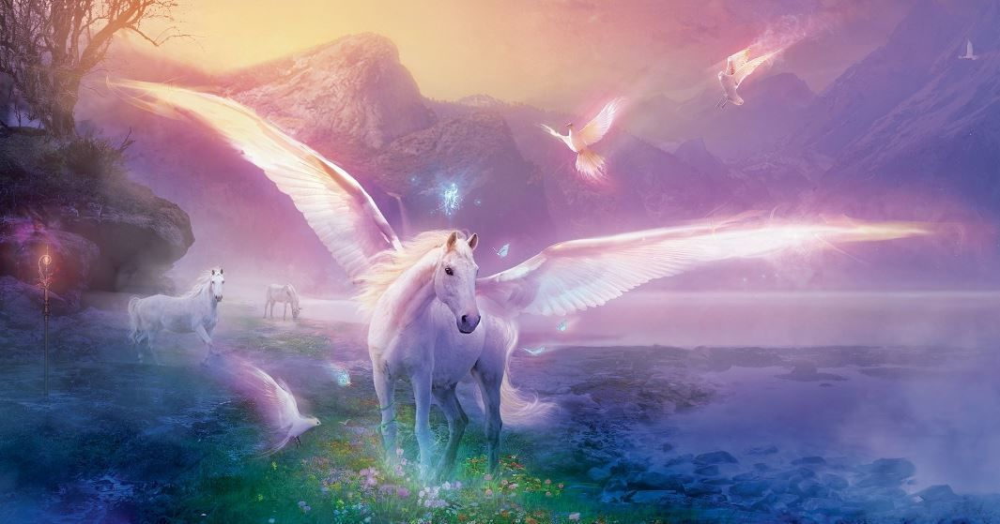

Unicorns are my favorite animal because they are rare and sometimes their horns are different colors.
Can your favorite animal do that? Probably not because they arent as cool and magical. Look at this
awesome creature below:
